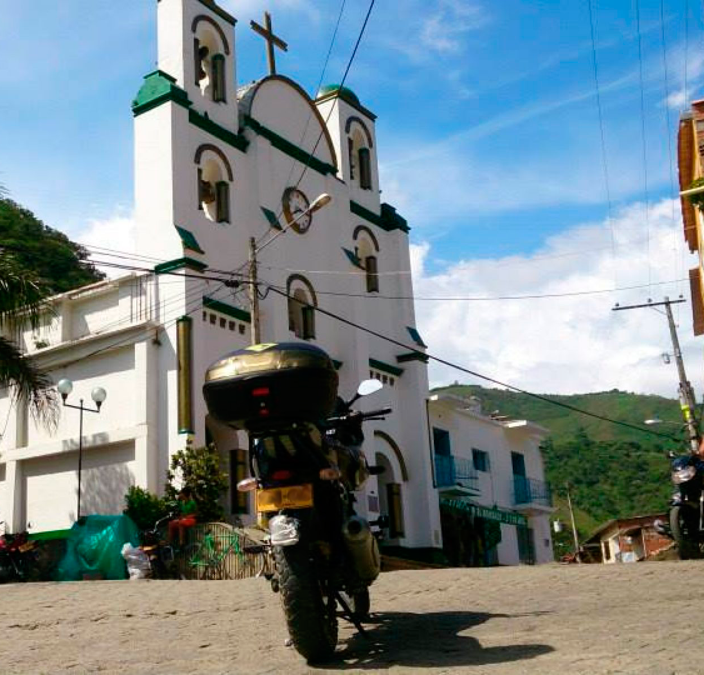

<ons-navigator animation="slide" var="radioPage">  
    
  <ons-page ng-controller="radioController">
    <ons-toolbar >
      <div class="left">
      </div>
      <div class="center">Muchos canales de contacto</div>
      <div class="right" ng-show="isFetching">
      </div>
    </ons-toolbar>

    <div class="details-content glass no-scroll">
     <div class="center">
        
        <h3>Siguenos en nuestras redes sociales</h3>
      </div>
      
      <div class="bgbox">
        
      </div>
    </div>

  </ons-page>

</ons-navigator>   